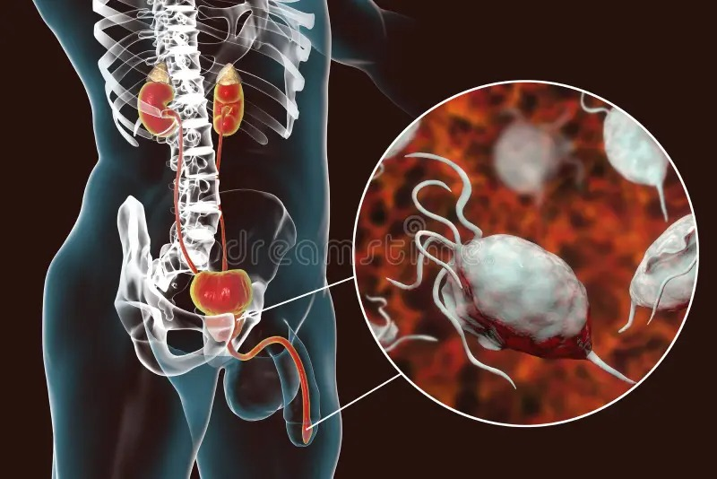

A tricomoníase é uma infecção sexualmente transmissível (IST) causada pelo protozoário Trichomonas vaginalis. Ela afeta a região genital de homens e mulheres, sendo caracterizada em mulheres principalmente por um corrimento vaginal amarelo-esverdeado e espumoso, acompanhado de mau cheiro e coceira intensa. Em homens ela costuma ser assintomática, mas quando surgem, os sintomas são geralmente leves e incluem orrimento uretral leve, fluido ou esbranquiçado.
A transmissão da tricomoníase ocorre quase exclusivamente pela relação sexual desprotegida (anal, vaginal ou oral). O protozoário Trichomonas vaginalis passa de pessoa para pessoa durante o contato íntimo. Outras formas, como contato com objetos contaminados ou transmissão de mãe para filho, são raras.
A medida mais eficaz de para prevenir a tricomoníase é o uso correto e consistente de preservativos (masculinos ou femininos) em todas as relações sexuais. Também vale lembrar de fazer exames, já que em muitos casos a infecção pode se mostrar assintomática.
O tratamento da tricomoníase é feito com antibióticos orais como o metronidazol e o tinidazol, a medicação é altamente eficaz e costuma eliminar a infecção em poucos dias, seja em dose única ou em ciclos de 7 dias.
